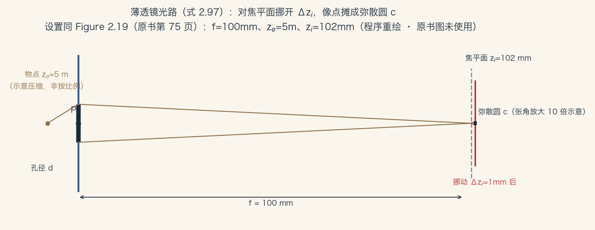
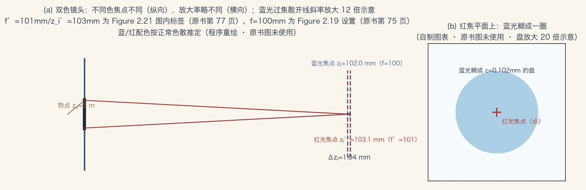
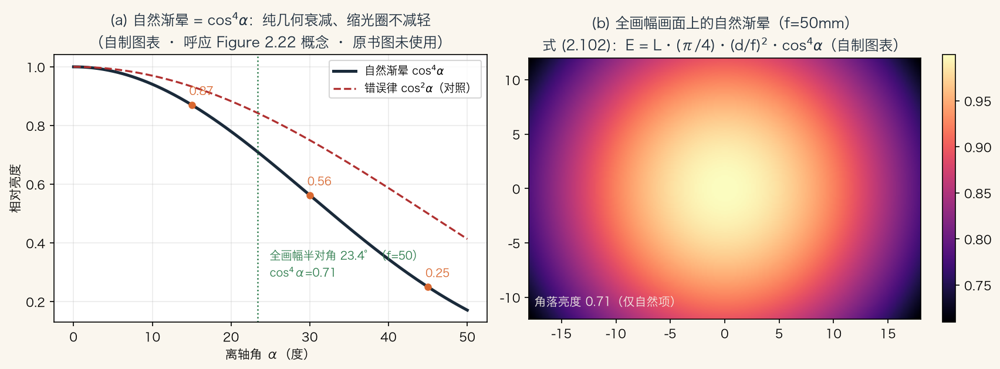
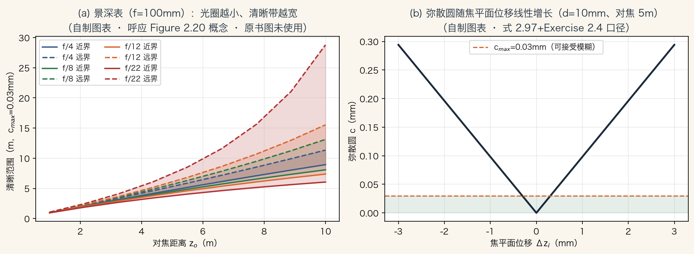

导引 · 本集五站
从针孔走到薄透镜
上一集讲光如何变亮暗，这一集进镜头。
光要先穿过镜头，才落到传感器上。
四件事：对焦、曝光、渐晕、像差。
五站：薄透镜、弥散圆、f 值、像差、渐晕。
依据：原书第 74–79 页
本集五站
薄透镜与透镜定律
弥散圆与景深
f 值与曝光
像差与渐晕
正课第十一集
01 / 16
薄透镜 · 式 2.97
薄透镜：会聚焦的针孔
薄透镜是一块玻璃，两面曲率很小且相等。
式 2.97：1/zo + 1/zi = 1/f。
焦距 100mm、物距 5m 时，像距约 102mm。
物距无穷时，像距等于 f，退化为针孔。
依据：原书第 74–75 页

薄透镜光路：焦距 100mm、物距 5m、像距约 102mm，弥散圆张角放大 10 倍示意｜程序生成，未用教材或论文原图
正课第十一集
02 / 16
对焦 · 弥散圆
糊不糊，看弥散圆
转动对焦环，把焦平面挪开 Δzi。
原本聚成一点的像摊成圆盘，叫弥散圆 c。
c 取决于 Δzi 相对 zi 的比例和孔径 d。
孔径越小，弥散圆越小。
依据：原书第 75–76 页
两个量
焦平面移动量 Δzi
孔径直径 d
弥散圆 c
景深由对焦距离与光圈决定
正课第十一集
03 / 16
曝光 · f 值
f 值：焦距除以孔径
式 2.98：N = f/d。
f/2.8 就是焦距除以 2.8 得到孔径直径。
全挡序列 1.4、2、2.8、4、5.6、8、11、16、22，每挡乘根号二。
面积翻倍就是一挡 EV，等效快门 1/250 到 1/125。
依据：原书第 76 页
N = f / d
式 2.98；N 是 f 值，f 是焦距，d 是孔径直径（同单位）
正课第十一集
04 / 16
像差 · 五种
五种赛德尔像差
真实镜头不是无限薄，会有几何像差。
三阶光学下有五种经典赛德尔像差。
球差、彗差、像散、场曲、畸变。
畸变把直线拍弯；其余四种坏聚焦质量和像面形状。
依据：原书第 76–77 页
五种像差
球差、彗差
像散、场曲
畸变
复合透镜可减轻
正课第十一集
05 / 16
色差 · 横与纵
色差：不同颜色不同焦点
玻璃折射率随波长略有不同。
不同颜色的焦点距离和放大率都略有差别。
横向色差：放大率随波长变，可按逐色径向畸变建模。
纵向色差：焦距随波长变，逐色模糊，高频难恢复。
依据：原书第 77 页；本集实验

双色镜头：蓝光焦距 100mm、红光 101mm，红焦平面上蓝光糊成一圈（放大 20 倍示意）｜程序生成，未用教材或论文原图
正课第十一集
06 / 16
渐晕 · cos⁴α
渐晕：亮度向边缘衰减
自然渐晕是几何的，缩光圈也躲不掉。
机械渐晕是遮挡，缩光圈可以缓解。
三个来源共四个 cos 因子，合成 cos⁴α。
基本辐射度关系：E = L·(π/4)·(d/f)²·cos⁴α。
依据：原书第 78–79 页；本集实验

cos⁴α 曲线与全画面渐晕热图：45° 只剩四分之一，全画幅角落约 0.71｜程序生成，未用教材或论文原图
正课第十一集
07 / 16
小结 · 一条线
从针孔到薄透镜的一条线
针孔模型管几何。
薄透镜加对焦，回答哪里清晰。
f 值回答进多少光。
像差和渐晕是真实镜头的代价，大多可标定。
依据：原书第 75–79 页
四个问题
清晰在哪里
进多少光
哪里会糊
哪里会暗
正课第十一集
08 / 16
实验一 · 透镜定律
透镜定律与放大率
物距无穷，像距 100mm。
物距 2f，像距 200mm，放大率 1。
物距 5m、f=100mm，像距 102.04mm。
放大率 m = zi/zo：5m 约 1/49，1.5f 处为 2。
依据：本集实验；原书第 75 页
三点验证
zo→∞ ⇒ zi=f
zo=2f ⇒ zi=2f, m=1
zo=5m ⇒ zi=102.04mm
m = zi/zo
正课第十一集
09 / 16
实验二 · 弥散圆
弥散圆与景深表
对焦 5m、挪 1mm、孔径 10mm，c≈0.098mm。
全画幅 6.2μm 像素，约盖 16 个像素。
屈光度：对焦 5m 是 0.2D；∞ 差 0.2D，3m 差 0.13D。
景深界 [4.36, 5.86]m；f/20 加宽到 [3.86, 7.08]m。
依据：本集实验；原书第 75–76 页

景深表与弥散圆 V 形曲线：固定 f=100mm、c=0.03mm，变量为对焦距离与 f 值｜程序生成，未用教材或论文原图
正课第十一集
10 / 16
实验三 · 双色镜头
双色镜头：色差的玩具版
蓝光 f=100mm，红光 f′=101mm。
同一 5m 物点，像距 102.04mm 与 103.08mm。
纵向差 1.04mm；放大率相对差 1.02%。
盘状模糊 MTF 在第一零点前单调下降。
依据：原书第 75、77 页；本集实验
两个方向
纵向：焦距差
横向：放大率差
纵向差 1.04mm
横向差 1.02%
正课第十一集
11 / 16
实验四 · 渐晕
自然渐晕的定量值
cos⁴α：0° 为 1，15° 为 0.87，30° 为 0.5625，45° 为 0.25。
全画幅半对角 23.4°，角落约 0.71。
f/2 的 E 是 f/16 的 64 倍，正好六挡。
全画幅与手机底单像素集光面积差约 30.8 倍。
依据：本集实验；原书第 78–79 页
三个依赖
像素面积
f 值平方
cos⁴α
增益与噪声归下一集
正课第十一集
12 / 16
总结 · 五句话
五句话带走
薄透镜 1/zo+1/zi=1/f，zo→∞ 时为针孔。
失焦用弥散圆度量，景深由对焦距离与光圈决定。
f 值 N=f/d；全挡根号二，一挡进光翻倍。
五种赛德尔像差，色差分横向与纵向；进光看 E=L(π/4)(d/f)²cos⁴α。
依据：原书第 75–79 页
五句话
透镜定律
弥散圆与景深
f 值与 EV
像差、色差、渐晕
正课第十一集
13 / 16
记忆锚
薄透镜是会聚焦的针孔
对焦选清楚谁，光圈选进多少光。
模糊与变暗是真实镜头的代价。
大多可以标定，也可以缓解。
自然渐晕缩光圈也躲不掉，机械渐晕可以。
依据：原书第 75、78–79 页
两个极限
物距无穷 ⇒ 针孔
自然渐晕纯几何
机械渐晕可缩光圈
模型是包含不是替换
正课第十一集
14 / 16
回书 · 页码
翻回原书第 74–79 页
式 2.97 与 Figure 2.19：第 75 页。
景深与式 2.98、EV：第 75–76 页。
五像差与色差、前后节点：第 76–77 页。
式 2.99–2.102、机械渐晕：第 78–79 页。
依据：原书第 74–79 页
四张图
2.19、2.21 程序重绘
2.20 镜头照片未重绘
2.22 未重绘，图表呼应
未使用原书图
正课第十一集
15 / 16
作业 · 移交
作业与下一集
本集范围：2.2.3 光学，第 74–79 页。
作业一：推导习题 2.4 的弥散圆与景深界。
作业二：验证一挡 f 值等效一挡快门。
作业三：按 Figure 2.20 画景深刻度窗。
依据：原书第 75–79 页
下一集
光子怎么变成 RGB
曝光、增益与快门
非线性、采样、噪声
颜色另讲
正课第十一集
16 / 16